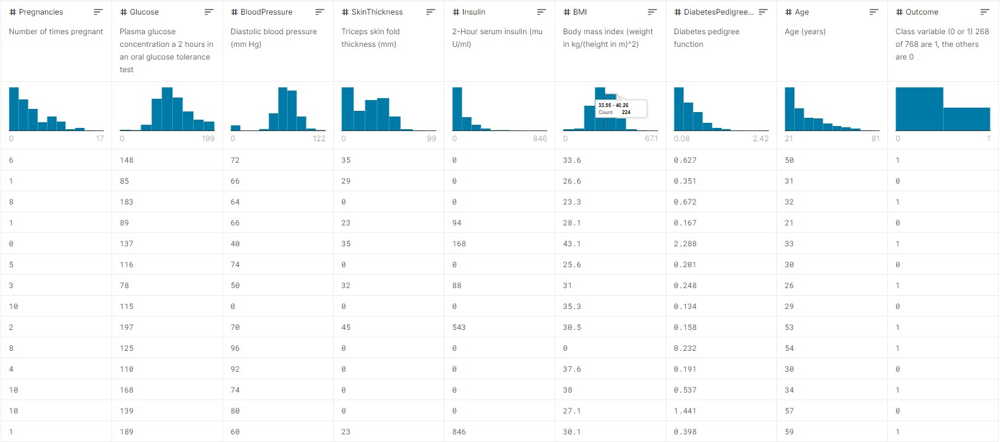
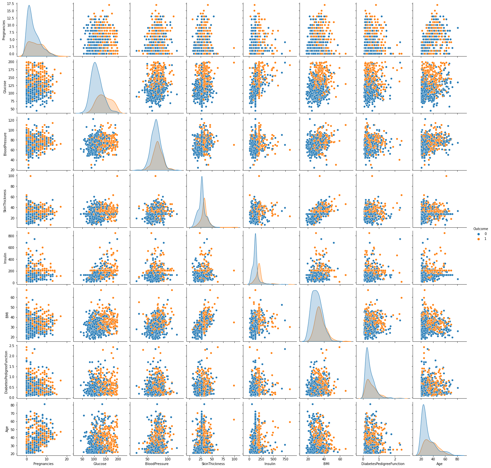
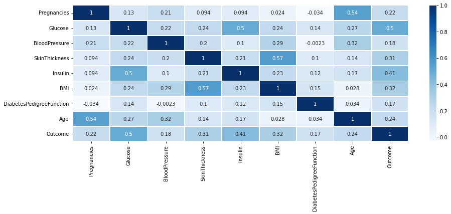
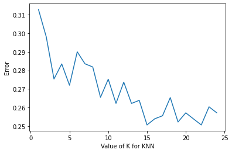
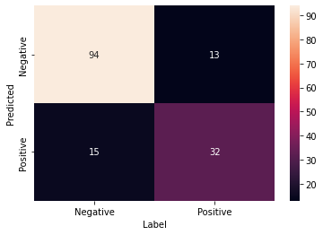
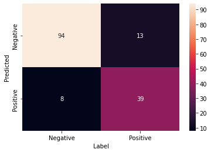
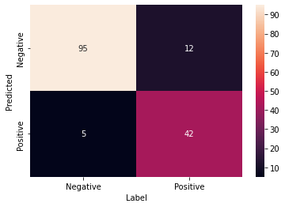

基于Scikit Learn库，使用kNN、朴素贝叶斯、决策树、随机森林算法，针对Kaggle机器学习仓库中的皮马印第安人糖尿病数据集进行分类，并比较数据预处理对分类性能的影响 以及 各算法的性能。
数据集介绍 该数据集最初来自美国国家糖尿病、消化和肾脏疾病研究所。创建数据集的目的是根据数据集中包含的某些诊断测量值，预测某一患者是否患有糖尿病。数据集中记录的所有患者都是至少 21 岁的皮马印第安血统的女性。
数据集下载
数据集由几个医学预测变量和一个目标变量Outcome组成。预测变量包括患者的怀孕次数、BMI、胰岛素水平、年龄等特征。

特征
数据类型
数据描述
Pregnancies
Integer
怀孕次数
Glucose
Integer
口服葡萄糖耐量试验中 2 小时的血浆葡萄糖浓度
BloodPressure
Integer
舒张压 (mm Hg)
SkinThickness
Integer
三头肌皮褶厚度（mm）
Insulin
Integer
2 小时血清胰岛素 (mu U/ml)
BMI
Integer
体重指数（体重公斤/（身高米）^2）
DiabetesPedigreeFunction
Integer
糖尿病谱系功能
Age
Integer
年龄（岁）
Outcome
Integer
类变量（0 或 1）
分类预测实现 导入相关库 1 2 3 4 5 6 7 8 9 10 11 12 13 14 15 16 17 18 19 import pandas as pdimport numpy as npimport random as rndfrom sklearn.preprocessing import StandardScalerfrom sklearn.model_selection import train_test_split, cross_val_scoreimport seaborn as snsimport matplotlib.pyplot as plt%matplotlib inline from sklearn.neighbors import KNeighborsClassifierfrom sklearn.naive_bayes import GaussianNBfrom sklearn.tree import DecisionTreeClassifierfrom sklearn.ensemble import RandomForestClassifierfrom sklearn.metrics import confusion_matrix
导入数据集 1 2 3 4 5 6 df = pd.read_csv("/content/drive/MyDrive/Colab Notebooks/datasets_pima-indians-diabetes.csv" ) print ('数据集列数：%.f， 数据集行数：%.f' % (df.shape[1 ], df.shape[0 ]))df.head()
输出如下
数据集列数：9， 数据集行数：768
index
Pregnancies
Glucose
BloodPressure
SkinThickness
Insulin
BMI
DiabetesPedigreeFunction
Age
Outcome
0
6
148
72
35
0
33.6
0.627
50
1
1
1
85
66
29
0
26.6
0.351
31
0
2
8
183
64
0
0
23.3
0.672
32
1
3
1
89
66
23
94
28.1
0.167
21
0
4
0
137
40
35
168
43.1
2.288
33
1
数据预处理 数据清洗 1 2 print (df.isnull().sum ())
Pregnancies 0
数据集中虽然没有 NaN，转而查看是否有不合理的零值。
1 2 print (768 - df.astype(bool ).sum (axis=0 ))
Pregnancies 111
显然，Glucose、BloodPressure、SkinThickness、Insulin、BMI 特征不应该出现零值，可以认为数据缺失。
因此可以通过计算某一特征下有效数据的平均值来填充该特征的缺失值。
1 2 3 4 5 6 7 8 9 10 11 12 13 14 15 16 df_copy = df.copy(deep=True ) df_copy[['Glucose' , 'BloodPressure' , 'SkinThickness' , 'Insulin' , 'BMI' ]] = df_copy[['Glucose' , 'BloodPressure' , 'SkinThickness' , 'Insulin' , 'BMI' ]].replace(0 , np.NaN) for index in df_copy.columns.values.tolist()[: -1 ]: if df_copy[index].isnull().sum () != 0 : temp = df_copy[df_copy[index].notnull()][[index, 'Outcome' ]].groupby('Outcome' )[index].mean().reset_index() df_copy.loc[(df_copy['Outcome' ] == 0 ) & (df_copy[index].isnull()), index] = temp[index][0 ] df_copy.loc[(df_copy['Outcome' ] == 1 ) & (df_copy[index].isnull()), index] = temp[index][1 ] df_copy.head()
输出如下
index
Pregnancies
Glucose
BloodPressure
SkinThickness
Insulin
BMI
DiabetesPedigreeFunction
Age
Outcome
0
6
148.0
72.0
35.0
206.84615384615384
33.6
0.627
50
1
1
1
85.0
66.0
29.0
130.28787878787878
26.6
0.351
31
0
2
8
183.0
64.0
33.0
206.84615384615384
23.3
0.672
32
1
3
1
89.0
66.0
23.0
94.0
28.1
0.167
21
0
4
0
137.0
40.0
35.0
168.0
43.1
2.288
33
1
部分函数的文档如下， 如果有对实现原理不清楚的地方可以进行针对性地进行了解。
特征工程 查看不同标签的样本在每两个特征之间的分布情况，以及两两特征的相关性，筛选出显著特征、摒弃非显著特征 。
1 2 3 4 5 6 7 8 9 10 sns.pairplot(df_copy, hue = 'Outcome' ) corrdf = df_copy.corr() print (corrdf['Outcome' ].sort_values(ascending = False ))plt.figure(figsize=(15 , 5 ), facecolor='w' ) sns.heatmap(corrdf, vmax=1 , square=False , annot=True , linewidth=1 , cmap=plt.cm.Blues)

Outcome 1.000000

不难看出，各个特征都与标签的相关性较高，且都为正相关，因此在构建分类器时应考虑所有特征。
数据标准化 1 2 3 4 5 6 7 8 sc_X = StandardScaler() source_x = pd.DataFrame(sc_X.fit_transform(df.drop(['Outcome' ], axis = 1 )), columns = ['Pregnancies' , 'Glucose' , 'BloodPressure' , 'SkinThickness' , 'Insulin' , 'BMI' , 'DPF' , 'Age' ]) sc_X_copy = StandardScaler() source_x_copy = pd.DataFrame(sc_X_copy.fit_transform(df_copy.drop(['Outcome' ], axis = 1 )), columns = ['Pregnancies' , 'Glucose' , 'BloodPressure' , 'SkinThickness' , 'Insulin' , 'BMI' , 'DPF' , 'Age' ])
构建模型与预测 分出训练集与测试集 构建两个模型，一个使用未进行数据预处理的数据集进行训练，一个反之，以此测试数据预处理对分类预测的影响。
1 2 3 4 5 6 source_y = df['Outcome' ] train_x, test_x, train_y, test_y = train_test_split(source_x, source_y, train_size = .8 , random_state = 0 ) source_y_copy = df_copy['Outcome' ] train_x_copy, test_x_copy, train_y_copy, test_y_copy = train_test_split(source_x_copy, source_y_copy, train_size = .8 , random_state = 0 )
KNN算法 1 2 3 4 5 6 7 8 9 10 11 12 13 14 15 16 17 18 19 20 21 22 23 24 25 26 27 28 29 30 31 k_range = range (1 , 25 ) k_error = [] for k in k_range: knn = KNeighborsClassifier(n_neighbors=k) scores = cross_val_score(knn, train_x, train_y, cv=10 , scoring='accuracy' ) k_error.append(1 - scores.mean()) plt.plot(k_range, k_error) plt.xlabel('Value of K for KNN' ) plt.ylabel('Error' ) plt.show() best_knn = KNeighborsClassifier(n_neighbors=15 ) best_knn.fit(train_x, train_y) print ("KNN score:" , best_knn.score(test_x, test_y))best_knn = KNeighborsClassifier(n_neighbors=15 ) best_knn.fit(train_x_copy, train_y_copy) print ("KNN score (data processed):" , best_knn.score(test_x_copy, test_y_copy))knn_pred = best_knn.predict(test_x_copy) knn_confusion = confusion_matrix(test_y_copy, knn_pred, labels=[0 , 1 ]) sns.heatmap(knn_confusion , annot=True , xticklabels=['Negative' , 'Positive' ] , yticklabels=['Negative' , 'Positive' ]) plt.ylabel("Predicted" ) plt.xlabel("Label" ) plt.show()
输出如下

KNN score: 0.8116883116883117
朴素贝叶斯算法 1 2 3 4 5 6 7 8 9 10 11 12 13 14 15 muNB = GaussianNB() muNB.fit(train_x, train_y) print ("Naive Bayesian score:" , muNB.score(test_x, test_y))muNB = GaussianNB() muNB.fit(train_x_copy, train_y_copy) print ("Naive Bayesian score (data processed):" , muNB.score(test_x_copy, test_y_copy))muNB_pred = muNB.predict(test_x_copy) muNB_confusion = confusion_matrix(test_y_copy, muNB_pred, labels=[0 , 1 ]) sns.heatmap(muNB_confusion , annot=True , xticklabels=['Negative' , 'Positive' ] , yticklabels=['Negative' , 'Positive' ]) plt.ylabel("Predicted" ) plt.xlabel("Label" ) plt.show()
输出如下
Naive Bayesian score: 0.7922077922077922

决策树算法 1 2 3 4 5 6 7 8 9 10 11 12 13 14 15 tree = DecisionTreeClassifier() tree.fit(train_x, train_y) print ("Decision Tree score:" , tree.score(test_x, test_y))tree = DecisionTreeClassifier() tree.fit(train_x_copy, train_y_copy) print ("Decision Tree score (data processed):" , tree.score(test_x_copy, test_y_copy))tree_pred = tree.predict(test_x_copy) tree_confusion = confusion_matrix(test_y_copy, tree_pred, labels=[0 , 1 ]) sns.heatmap(tree_confusion , annot=True , xticklabels=['Negative' , 'Positive' ] , yticklabels=['Negative' , 'Positive' ]) plt.ylabel("Predicted" ) plt.xlabel("Label" ) plt.show()
输出如下
Decision Tree score: 0.7597402597402597

随机森林算法 1 2 3 4 5 6 7 8 9 10 11 12 13 14 15 RF = RandomForestClassifier(n_jobs=4 ) RF.fit(train_x, train_y) print ('RandomForestClassifier score:' , RF.score(test_x, test_y))RF = RandomForestClassifier(n_jobs=4 ) RF.fit(train_x_copy, train_y_copy) print ('RandomForestClassifier score (data processed):' , RF.score(test_x_copy, test_y_copy))RF_pred = RF.predict(test_x_copy) RF_confusion = confusion_matrix(test_y_copy, RF_pred, labels=[0 , 1 ]) sns.heatmap(RF_confusion , annot=True , xticklabels=['Negative' , 'Positive' ] , yticklabels=['Negative' , 'Positive' ]) plt.ylabel("Predicted" ) plt.xlabel("Label" ) plt.show()
输出如下
RandomForestClassifier score: 0.8116883116883117

分析 由实验结果可知，对于``皮马印第安人糖尿病数据集`， 各算法的分类预测准确率都比较高，排名如下
排名
算法
准确率
1
随机森林算法
0.8896103896103896
2
KNN算法
0.8831168831168831
3
决策树算法
0.8636363636363636
4
朴素贝叶斯算法
0.8181818181818182
同时，我们发现，经过数据预处理后，各算法的准确率都大幅提升，具体升值如下
算法
训练数据经过预处理
训练数据未经过预处理
提升
随机森林算法
0.8896103896103896
0.8116883116883117
0.0779220779220779
KNN算法
0.8831168831168831
0.8116883116883117
0.0714285714285714
决策树算法
0.8636363636363636
0.7597402597402597
0.1038961038961039
朴素贝叶斯算法
0.8181818181818182
0.7922077922077922
0.025974025974026
可见，数据预处理是建立机器学习模型的第一步，也是十分重要的一步，对最终结果有着决定性的作用。